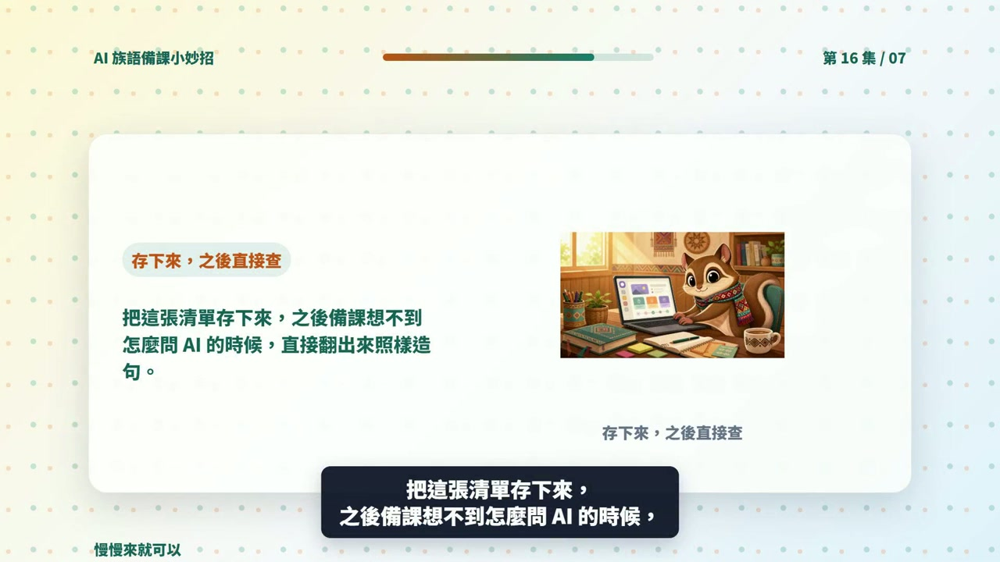

EP016 講義：請 ChatGPT 幫我整理這個模組學到的提問清單
<!-- handout-screenshot:auto -->
講義截圖

圖說：EP016 本集操作畫面截圖，協助老師對照影片步驟與講義內容。
<!-- /handout-screenshot:auto -->
今天只做一件事
把前面學過的問法整理成一張自己的提問清單。以後備課時，不必從頭想，只要找到合適的句子、換成自己的資料就能使用。
需要準備
- 回想最近請 ChatGPT 幫忙做過哪些事。
- 準備一個方便保存清單的地方，例如電腦中的備課資料夾或自己的線上文件。
- 想一個之後真的會拿來備課的族語主題，用來測試清單是否好用。
這一集整理的是「怎麼問」，不需要放入真實學生姓名、成績、聯絡方式或家庭資料。
步驟 1：打開 ChatGPT
- 打開 ChatGPT。
- 找到畫面下方的輸入框。
- 確認目前使用的是自己的帳號與正確對話頁面。
步驟 2：輸入本集專用任務
下面已經列好這個模組練習過的備課工作，可以整段複製：
我最近學會請 ChatGPT 協助下列族語備課工作：
1. 整理教材重點
2. 設計暖身活動
3. 依班級狀況調整活動
4. 安排一堂課的時間
5. 製作學習單
6. 準備口頭小測驗
7. 看學生作答並整理建議
8. 設計分組活動
9. 把同一份內容分成不同難度
10. 寫給家長看的課堂訊息
11. 整理課堂回顧
12. 設計不用道具的課堂小遊戲
請把這些工作整理成一張容易查找的提問清單
請依照用途分類
每一類都要包含：
1. 這一類可以在什麼時候使用
2. 一句可以直接複製的提問句
3. 提問句中需要由我更換的地方，請用中括號標示
4. 送出前要準備哪些資料
5. 收到回答後，老師要檢查什麼
請使用簡短、白話的繁體中文
不要放入真實學生資料
涉及族語或文化內容時，請提醒我必須自己確認正確性步驟 3：送出並看分類
- 按下送出按鈕。
- 等回答完整出現。
- 先看分類名稱，例如「整理內容」「設計活動」「評量與回饋」。
- 再看每一類下面的提問句，確認自己看得懂要換哪些資料。
AI 回覆檢查點
- [ ] 12 項工作都有整理進去，沒有遺漏。
- [ ] 相近的工作放在同一類，分類名稱容易看懂。
- [ ] 每一類都有「什麼時候用」的說明。
- [ ] 每一句提問都可以直接複製使用。
- [ ] 要更換的主題、時間、學生程度等資料都有用中括號標出。
- [ ] 每一類都有送出前的準備資料。
- [ ] 每一類都有收到回答後的檢查重點。
- [ ] 沒有要求輸入學生個人資料。
- [ ] 沒有把 AI 寫成族語或文化內容的最後決定者。
步驟 4：用一個真實主題試問
不要只把清單存起來。從裡面挑一句，換成自己的資料後試一次。
例如原句是：
請把這份關於 [課程主題] 的教材，整理成適合 [學生程度] 的 3 個重點可以換成：
請把這份關於太魯閣族文化的教材，整理成適合初學者的 3 個重點如果換完後仍然不知道要填什麼，回到同一個對話請它改：
這份清單有些地方我還是不知道要填什麼
請在每一個中括號後面加上一個簡短例子
其他內容不要改步驟 5：把清單保存好
- 選取 ChatGPT 整理好的清單。
- 複製到自己的備課資料夾或常用文件。
- 檔名可以寫成「我的族語備課提問清單」。
- 之後發現好用的新問法，就加在同一份清單裡。
族語與文化安全提醒
- 提問清單只是問法，不代表 AI 的回答一定正確。
- 族語拼寫、方言別、翻譯、發音與例句，要由老師或合適的族語使用者確認。
- 文化故事、祭儀、禁忌與部落知識不能只靠 AI 判斷。
- 不要把未公開、有限制或未取得同意的文化內容貼進 ChatGPT。
- 使用學生例子時，請改成不會辨認出個人的假名與概略情況。
今日金句
學過的問法整理成清單，以後備課就能直接找到、換字、使用。
下一步
把提問清單放在每次備課都找得到的地方。下一次準備新主題時，先從清單挑一句使用，再把有效的問法留下來，慢慢做成自己的備課工具箱。